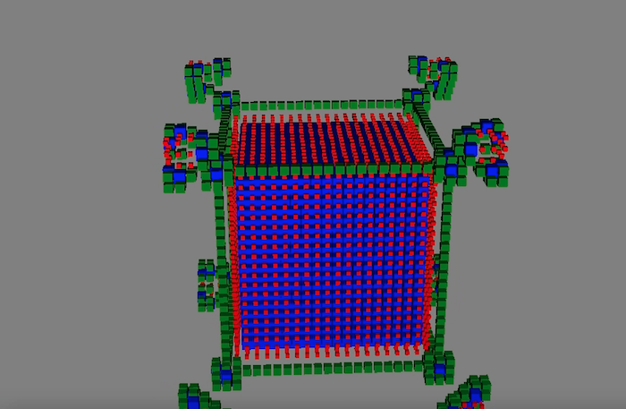

Work
- −1.0 s Fire TV launcher25% faster on VegaOS
- −700 ms Fire TV Details page load20% faster
- −35% Podcast retrieval latency200 ms to 130 ms p95
- 10× Faster Echo visual ring response
Also: designed the real-time inventory service that took a facility from pilot to 800K+ items, and led technical direction for contractors on Fire TV.
About
I love the technical depth of distributed systems, the satisfaction of finding that elusive bottleneck, and the challenge of making things work at scale. I also value the people side: mentorship, collaboration and building things together.
I've helped interns and contractors grow into strong engineers who ship great work.
Based in Los Angeles and exploring what's next. Always happy to talk distributed systems, scaling challenges, interesting technical problems, or Liverpool FC.
Projects
Things I built outside of work.
-

Hokm
A terminal version of the Persian card game, with a computer player that moved from fixed rules to a decision tree.
-

3D Game of Life
Conway's Game of Life in three dimensions, with rules you define and a speed you control.
Beyond work
For 15 years I've been an animator in the Junior Youth Spiritual Empowerment Program, guiding groups of young people. For 10 years I've also tutored Ruhi Institute study circles.
The Junior Youth Spiritual Empowerment Program is a community program for young people around ages 11 to 14. Each group meets with an animator, who acts as a mentor and friend. Together they study, build moral reasoning and language skills, and plan and carry out service projects in their neighborhoods.